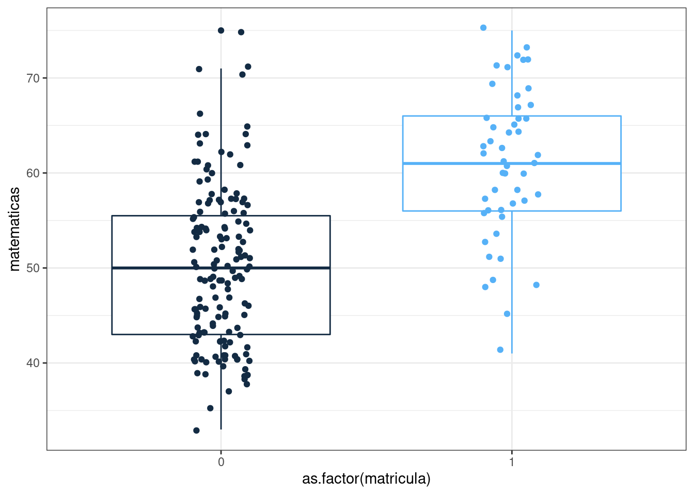

Modelo Logit
Unidad 1
David Arango Daniel Gonzalez
Problema
El siguiente problema es tomado del documento realizado por Joaquín Amat Rodrigo publicado en RPlus con el fin de presentar el modelo logit simple
Objetivo
Ilustrar los componentes del modelo lineal general para el caso particular del modelo de logit simple, enmarcado dentro de los modelos llamados modelos de probabilidad
Determinar la probabilidad de que un estudiante obtenga matricula de honor a partir de la nota obtenida en matemáticas
Preguntas que surgen
- Cómo se estiman los modelos de regresión con variables cualitativas como variables respuesta?
- Qué problemas se presentan cuando se desean realizar inferencias? Que pruebas de hipotesis se deben realizar?
- Como se mide la bondad de ajuste del modelo estimado?
- Como se interpretan los resultados obtenidos?
Preguntas planteadas en Gujarati(2009)
Con el prósito de responder a esta preguntas, empezaremos con las caracteristicas de los datos
Datos
La siguiente data contiene los datos de un conjunto de estudiantes que han obtenido matreicua de honor (matricula =1) y un grupo de no la han conseguido (matricula =0) y sus respectivas notas obtenidas en matemáticas
En este caso se debe contar con una variable categótica con dos niveles representados por dos valores : 0 y 1 (variable matricula), quien obra como variable dependiente y por lo menos una variable cuantitativa que tome diferentes valores (en este caso la nota de matemáticas).
matricula <- c(0, 0, 0, 0, 0, 0, 0, 0, 0, 0, 0, 1, 0, 1, 0, 0, 0, 0, 1, 0, 0, 1, 0, 0, 0, 0, 1, 0, 0, 0, 0, 0, 1, 0, 0, 1, 0, 1, 0, 0, 0, 0, 0, 0, 1, 0, 0, 0, 0, 0, 1, 0, 0, 0, 1, 0, 0, 0, 0, 0, 0, 1, 0, 0, 0, 0, 0, 0, 0, 0, 0, 0, 1, 0, 0, 0, 1, 0, 0, 0, 0, 0, 0, 1, 0, 1, 0, 0, 0, 0, 1, 0, 1, 0, 0, 1, 1, 1, 0, 1, 0, 0, 0, 0, 0, 0, 1, 0, 0, 1, 0, 0, 0, 1, 1, 0, 0, 1, 0, 0, 0, 0, 0, 0, 1, 0, 0, 0, 0, 0, 0, 1, 1, 0, 0, 1, 0, 0, 0, 0, 0, 0, 0, 0, 0, 0, 1, 0, 0, 0, 0, 0, 0, 0, 1, 0, 0, 0, 0, 1, 1, 0, 1, 1, 0, 0, 0, 0, 1, 0, 0, 0, 0, 0, 0, 0, 1, 0, 0, 1, 1, 0, 1, 1, 1, 1, 0, 0, 1, 0, 0, 0, 0, 0, 1, 0, 0, 0, 1, 1)
matematicas <- c(41, 53, 54, 47, 57, 51, 42, 45, 54, 52, 51, 51, 71, 57, 50, 43, 51, 60, 62, 57, 35, 75, 45, 57, 45, 46, 66, 57, 49, 49, 57, 64, 63, 57, 50, 58, 75, 68, 44, 40, 41, 62, 57, 43, 48, 63, 39, 70, 63, 59, 61, 38, 61, 49, 73, 44, 42, 39, 55, 52, 45, 61, 39, 41, 50, 40, 60, 47, 59, 49, 46, 58, 71, 58, 46, 43, 54, 56, 46, 54, 57, 54, 71, 48, 40, 64, 51, 39, 40, 61, 66, 49, 65, 52, 46, 61, 72, 71, 40, 69, 64, 56, 49, 54, 53, 66, 67, 40, 46, 69, 40, 41, 57, 58, 57, 37, 55, 62, 64, 40, 50, 46, 53, 52, 45, 56, 45, 54, 56, 41, 54, 72, 56, 47, 49, 60, 54, 55, 33, 49, 43, 50, 52, 48, 58, 43, 41, 43, 46, 44, 43, 61, 40, 49, 56, 61, 50, 51, 42, 67, 53, 50, 51, 72, 48, 40, 53, 39, 63, 51, 45, 39, 42, 62, 44, 65, 63, 54, 45, 60, 49, 48, 57, 55, 66, 64, 55, 42, 56, 53, 41, 42, 53, 42, 60, 52, 38, 57, 58, 65)
datos <- data.frame(as.factor(matricula), matematicas)
head(datos, 4) as.factor.matricula. matematicas
1 0 41
2 0 53
3 0 54
4 0 47Distribución de matriculados:
Utilizamos la función table() para encontrar la distribución de la variable categórica matricula:
table(datos$matricula)< table of extent 0 >Distribución del puntaje en matemáticas por tipo de matricula
Tambien podemos explorar el comportamiento de la variable cuantitativa (matematicas) para las dos categorías, que en este caso corresponde a la distribución de las notas por tipo de matricula :
ggplot(data = datos, aes(x = as.factor(matricula), y = matematicas, color = matricula)) +
geom_boxplot() +
geom_jitter(width = 0.1) +
theme_bw() +
theme(legend.position = "null")
Modelo logit
Inicialmente podriamos explorar una estimación de MCO, como posibilidad de estimación:
modelo0 = lm(matricula ~ matematicas)
summary(modelo0)
Call:
lm(formula = matricula ~ matematicas)
Residuals:
Min 1Q Median 3Q Max
-0.76516 -0.27653 -0.06712 0.17720 1.02596
Coefficients:
Estimate Std. Error t value Pr(>|t|)
(Intercept) -0.979947 0.150883 -6.495 6.57e-10 ***
matematicas 0.023268 0.002822 8.245 2.25e-14 ***
---
Signif. codes: 0 '***' 0.001 '**' 0.01 '*' 0.05 '.' 0.1 ' ' 1
Residual standard error: 0.3729 on 198 degrees of freedom
Multiple R-squared: 0.2556, Adjusted R-squared: 0.2518
F-statistic: 67.99 on 1 and 198 DF, p-value: 2.248e-14g3=ggplot(data = datos, mapping = aes(x=matematicas, y=matricula)) +
geom_point() +
theme_bw() +
geom_smooth(method='lm', formula=y~x, se=FALSE, col='dodgerblue1')
g3Como se puede observar este modelo no permite ajustar una linea que represente los valores obtenidos en la prueba de matematicas. Además de no cumplir con los supuestos planteados para el modelo de regresión lineal simple.
- No normalidad de los errores
- Heteroscedasticidad de u
- Posibilidad de que \(\widehat{Y_{i}}\) se encuentre por fuera del rango \([0,1]\), estimación de la probabilidad de \(Y\)
- Valores muy bajos para \(R^{2}\), dada la dificultad de ajuste para una lina reacta
Estos problemas los podemos superar al plantear el siguiente modelo teniendo como base la función de distribución acumulada $F(x) = P(X x) $ y la función logistica \(f(x)= \dfrac{1}{1+\exp{\{-x\}}}\)
fx=function(x){
1/(1+exp(-x))
}
x=seq(from =-10 ,to= 10, by= 0.1)
f=fx(x)
plot(x,f, type="l", col="#BC2B6A", lwd=5)
grid()Empleando la funcion logistica se replantea el modelo partiendo del logaritmo de la razón de probabilidades en función de una combinación lineal de las variables independientes :
\[\ln \Bigg(\dfrac{P(Y=k|X=x)}{1-P(Y=k|X=x)}\Bigg) = \beta_{0}+ \beta_{1} \hspace{.2cm}x_{i} + u_{i}\]
Su estimación se puede plantear como:
\[\ln \Bigg(\dfrac{P_{i}}{1-P_{i}} \Bigg) = \ln (odds) =\beta_{0} + \beta_{1} \hspace{.2cm}x_{i} + u_{i}\] Donde :
\(odds = \dfrac{P_{i}}{1-P_{i}} = \dfrac{P(Y=k|X=x)}{1-P(Y=k|X=x)}\)
\(\ln(odds) = \ln \Bigg(\dfrac{P_{i}}{1-P_{i}} \Bigg) = \ln \Bigg(\dfrac{P(Y=k|X=x)}{1-P(Y=k|X=x)}\Bigg)\)
\(\ln \Bigg(\dfrac{1}{0}\Bigg) \hspace{.5cm}\text{si el estudiante RECIBE matricula de honor}\)
\(\ln \Bigg(\dfrac{0}{1}\Bigg) \hspace{.5cm}\text{si el estudiante NO RECIBE matricula de honor}\)
Si \(p = 1-p\) entonces \(odds = 1\) , por tanto \(\ln(odds) = 0\)
Si \(p < 1-p\) entonces \(odds < 1\) , por tanto \(\ln(odds) < 0\)
Si \(p > 1-p\) entonces \(odds > 1\) , por tanto \(\ln(odds) > 0\)
Para realizar la estimación del modelo logit utilizamos la función
glm
modelo1 <- glm(matricula ~ matematicas, data = datos, family = "binomial")
summary(modelo1)
Call:
glm(formula = matricula ~ matematicas, family = "binomial", data = datos)
Deviance Residuals:
Min 1Q Median 3Q Max
-2.0332 -0.6785 -0.3506 -0.1565 2.6143
Coefficients:
Estimate Std. Error z value Pr(>|z|)
(Intercept) -9.79394 1.48174 -6.610 3.85e-11 ***
matematicas 0.15634 0.02561 6.105 1.03e-09 ***
---
Signif. codes: 0 '***' 0.001 '**' 0.01 '*' 0.05 '.' 0.1 ' ' 1
(Dispersion parameter for binomial family taken to be 1)
Null deviance: 222.71 on 199 degrees of freedom
Residual deviance: 167.07 on 198 degrees of freedom
AIC: 171.07
Number of Fisher Scoring iterations: 5El modelo estimado en su forma original :
\[\ln \Bigg( \dfrac{\widehat{P_{i}}}{1-\widehat{P_{i}}} \Bigg) = \widehat{\beta_{0}} + \widehat{\beta_{1}} \hspace{.2cm}x_{i}\]
Utilizamos la función inversa del logaritmo
\[\Bigg( \dfrac{\widehat{P_{i}}}{1-\widehat{P_{i}}} \Bigg) = \exp{\bigg\{ \widehat{\beta_{0}} + \widehat{\beta_{1}} \hspace{.2cm} x_{i}}\bigg\}\]
\[\Bigg( \dfrac{\widehat{P_{i}}}{1-\widehat{P_{i}}} \Bigg) = \exp{\big\{ -9.793942 + 0.1563404 \hspace{.2cm}x_{i}}\big\}\]
El coeficiente estimado \(\widehat{\beta_{0}}\) corresponde al valor esperado del logaritmo de la razón de probabilidades (\(\ln \Bigg(\dfrac{P_{i}}{(1-P_{i})}\Bigg)\) para un estudiante con nota cero en matemáticas. Para leerlo enterminos de probabilidad realizamos la siguiente transformación:
# coeficientes estimados
b=modelo1$coefficients
b0=b[1]; names(b0)= " "
b1=b[2]; names(b1)= " "
#-------------------------
x=0
exp(b0+b1*x)
5.578854e-05 exp(b0+b1*x)/(1-exp(b0+b1*x))
5.579165e-05 Ahora para interpretar el aporte que genera un punto adicional en la nota de matemáticas sobre la probabilidad realizamos el siguiente cálculo:
\[\exp{\{ 0.1563404 \}} = 1.169224\]
exp(0.1563404) = 1.169224Este valor representa un aumento de 0.01169224 sobre la probabilidad de obtenre matricula de honor por el incremento de un punto adicional en la nota de matemáticas
Interpretación de \(\widehat{\beta_{0}}\)
Cuando \(x=0\) la probabilidad de obtener matricula es de \(0.00005\) %
\(\widehat{\beta_{1}}\) indica el cambio en \(ln(p/(1-p))\) debido a un increento unitario en \(x\), por lo que es necesario sacar la funcion inversa al logaritmo que es la función exponencial
Por cada unidad de aumento de \(x\) los \(odds\) de obtener matricula se incrementan en : \(1.17\) veces
exp(b1)
1.169224 Un intervalo de confianza para los coeficientes se puede obtener mediante :
library(MASS)
confint(object = modelo1, level = 0.95 ) 2.5 % 97.5 %
(Intercept) -12.9375208 -7.0938806
matematicas 0.1093783 0.2103937# MEDIANTE BASE GRAPHICS SIN INTERVALOS DE CONFIANZA
# Codificación 0,1 de la variable respuesta
datos$matricula <- as.character(matricula)
datos$matematicas <- as.numeric(matematicas)
plot(matricula ~ matematicas, datos, col = "darkblue",
main = "Modelo regresión logística",
ylab = "P(matrícula=1|matemáticas)",
xlab = "matemáticas", pch = "I")
# type = "response" devuelve las predicciones en forma de probabilidad en lugar de en log_ODDs
curve(predict(modelo1, data.frame(matematicas = x), type = "response"),
col = "#447270", lwd = 3, add = TRUE)
abline(h=.50, col="red")
grid()Bondad de ajuste del modelo
library(vcd)
predicciones <- ifelse(test = modelo1$fitted.values > 0.5, yes = 1, no = 0)
mc <- table(modelo1$model$matricula, predicciones,
dnn = c("observaciones", "predicciones"))
mc predicciones
observaciones 0 1
0 140 11
1 27 22mosaic(mc, shade = T, colorize = T,
gp = gpar(fill = matrix(c("#447270", "#f6b915", "#f6b915","#447270"), 2, 2)))
Cuenta \(R^{2}\)
cuenta_R2= sum(diag(mc))/sum(mc)
cuenta_R2[1] 0.81library(DescTools)
PseudoR2(modelo1, which = "McFadden") McFadden
0.2498172 library(pscl)
pR2(modelo1)fitting null model for pseudo-r2 llh llhNull G2 McFadden r2ML r2CU
-83.5366186 -111.3550233 55.6368095 0.2498172 0.2428425 0.3615832 Predicción
Predecir la probabilidad de que un estudiante pueda tener matricuala de honor con un puntaje en matemáticas de 70 puntos
newdata1 <- data.frame(matematicas=c(30,40,50,60,70))
newdata1$rankP <- predict(modelo1, newdata = newdata1, type = "response")
newdata1 matematicas rankP
1 30 0.006037368
2 40 0.028186305
3 50 0.121647088
4 60 0.398068206
5 70 0.759489505